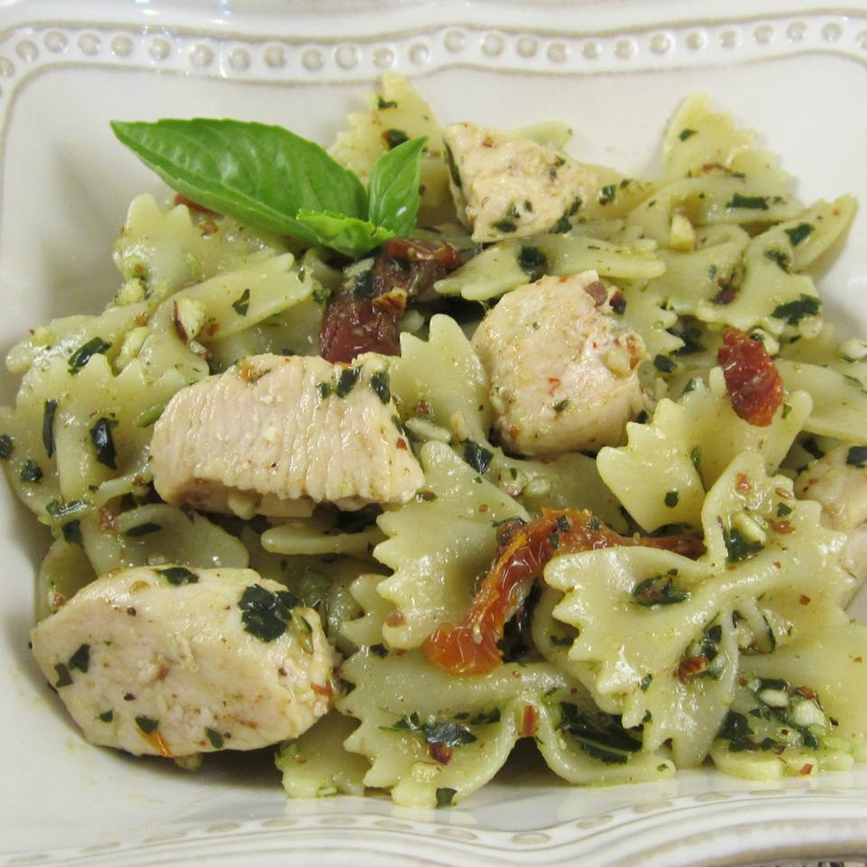

Pesto Pasta with Chicken

Description
Easy and delicious pasta with chicken. Serve with crusty bread and salad for a quick dinner. Use as much or as little pesto sauce as you like. Using homemade pesto will taste even better, but it adds to prep time. Enjoy!
Ingredients
- 1 (16 ounce) package bow tie pasta
- 1 teaspoon olive oil
- 2 cloves garlic, minced
- 2 bonless skinless chicken breasts, cut into bite-sized pieces
- crushed red pepper flakes to taste
- 1/3 cup oil-packed sun-dried tomatoes, drained and cut into strips
- 1/2 cup pesto sauce
Steps
-
Step 1
- Bring a large pot of lightly salted water to a boil. Add pasta and cook for 8 to 10 minutes or until al dente; drain.
Step 2
- Heat oil in a large skillet over medium heat. Saute garlic until tender, then stir in chicken. Season with red pepper flakes. Cook until chicken is golden, and cooked through.
Step 3
- In a large bowl, combine pasta, chicken, sun-dried tomatoes and pesto. Toss to coat evenly.